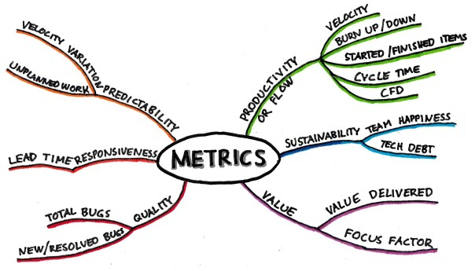
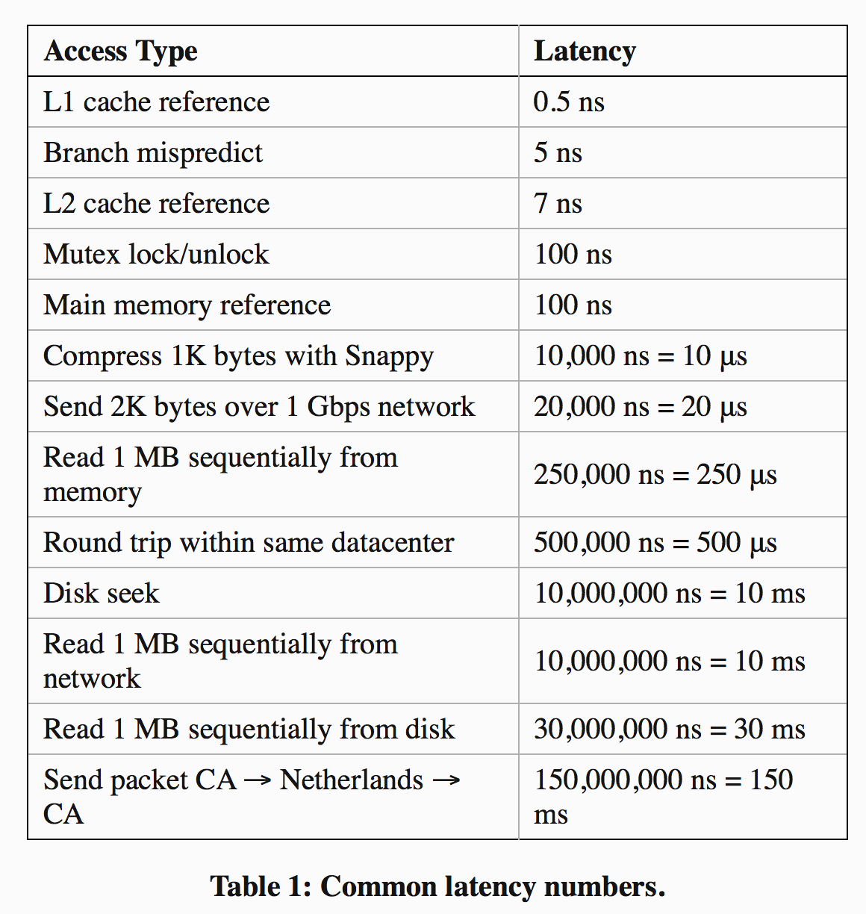

Measure what you want to improve

My experience at Google demonstrated the power of a well-chosen metric and its ability to tackle a wide range of problems. Google runs thousands of live traffic search experiments per year, and their reliance on metrics played a key role in ensuring search quality and building their market share
Use metrics to drive process
Measuring progress and performance might seem to fall within your manager’s purview, but it’s actually a powerful tool for assessing your own effectiveness and prioritizing your work.
"If you can't mesure it, you can't improve it" (Peter Drucker)
Good metrics accomplish a number of goals:
- Help you focus on the right things. They confirm that your product changes - and all the effort you're put into them - actually achieve your objectives.
When visualized over time, good metrics help guard against fututre regressions.
Without a dashboard of signup rates, application latency, and other useful metrics, it would be hard to identify many of these regressions.
Good metrics can drive forward progress.
“In a conversation I had with Sam Schillace, Box’s VP of Engineering, he explained a technique called performance ratcheting that they now use to address this problem and apply downward pressure on performance metrics. In mechanics, a ratchet is a device that allows a wheel with many teeth along its edge to rotate in one direction while preventing motion in the opposite direction. At Box, they use metrics to set a threshold that they call a performance ratchet. Any new change that would push latency or other key indicators past the ratchet can’t get deployed until it’s optimized, or until some other feature is improved by a counterbalancing amount.”
A good metric lets you measure your effectiveness over time and compare the leverage of what you’re doing against other activities you could be doing instead.
Pick the Right metric to incentivize the behaviour you want
We tend to be good at solving problems and optimizing a metric once it’s been set. However, it’s crucial to remember that the choice of which metric to measure dramatically impacts and influences the type of work that we do. The right metric functions as a North Star, aligning team efforts toward a common goal; the wrong metric leads to efforts that might be ineffective or even counterproductive.
Weekly active users vs. weekly active rate by age of cohort
When tracking user engagement, the number of weekly active users doesn’t provide a complete picture. In fact, that number might increase temporarily even if product changes are actually reducing engagement over time. Users could be signing up as a result of prior momentum, before there’s time for the long-term effects of the changes to be reflected in the gross numbers. And they might be more likely to churn and abandon the product after signing up than before. An alternative and more accurate metric would be the weekly active rate by age of cohort. In other words, measure the fraction of users who are still weekly actives the nth week after signing up, and track how that number changes over time. This metric provides more actionable insight into how product changes have affected the engagement of newer cohorts of users as compared to older ones.
What you don't measure is important as well.
In Delivering Happiness, Zappos CEO Tony Hsieh shares a story of how he built a culture of great customer service by making a key decision about what not to measure. Most call centers assess the performance of customer service representatives using their “average handle time.” This measures the average number of minutes it takes an employee to handle a customer call. Reducing this metric saves costs because employees handle more phone calls per day—but this was something that Hsieh didn’t actually want to optimize for. “This [metric] translates into reps worrying about how quickly they can get a customer off the phone, which in our eyes is not delivering great customer service,” Hsieh explains. “At Zappos, we don’t measure call times (our longest phone call was almost six hours long!) … We just care about whether the rep goes above and beyond for every customer.” This decision enabled Zappos to distinguish itself in customer service
Picking the right metric applies to your personal goals as well as your professional ones
I knew writing this book would be a long and challenging project, so I established the habit of writing every day. Early on, I set a goal of writing for at least three hours per day, and I kept track of my progress. What I noticed after a few weeks, however, was that I would spend much of those three hours re-reading and re-writing to perfect my sentences. In fact, some days after editing, I actually would end up with fewer words than I had started out with initially. Great writers like Stephen King and Mark Twain underscore the importance of revision, but I knew that I was rewriting too much too early, and that I would be better off drafting more chapters. And so, I changed my metric. Rather than focusing on writing three hours per day, I focused on writing 1,000 words per day. Some days, that took me two hours; other days, it took four or five. The new metric incentivized me to focus on drafting new content rather than focusing on sentence quality—something I could revisit at a later time. That simple change was all I needed to significantly increase my writing pace.
The more complex the product and the goal, the more options there are for what to measure and not to measure. When deciding which metrics to use, choose ones that:
- maximize impact: should be the ones that when systematically increased over time, leads you and the rest of the team to make the greatest and most sustainable impact.
actionable:
An actionable metric is one whose movements can be causally explained by the team’s efforts.
Be vigilant to vanity metrics, as Eric Ries explains in
The Lean startupresponsive & robust: metrics should be updated timely and robust to noise.
Instrument Everything to Understand What's Going on
Adopting a mindset of instrumentation means ensuring we have a set of dashboards that surface key health metrics and that enable us to drill down to the relevant data. However, many of the questions we want to answer tend to be exploratory, since we often don’t know everything that we want to measure ahead of time. Therefore, we need to build flexible tools and abstractions that make it easy to track additional metrics.
Etsy, a company that sells handmade crafts online, does this exceptionally well. The engineering team instruments their web application according to their philosophy of “measure anything, measure everything.” 29 They release code and application configurations over 25 times per day, and they move quickly by investing time in gathering metrics for their servers, application behavior, network performance, and the countless other inputs that drive their platform. To do this effectively, they use a system called Graphite that supports flexible, real-time graphing, 30 and a library called StatsD for aggregating metrics. A single line of code lets them define a new counter or timer on the fly, track statistics every time the code is executed, and automatically generate a time series graph that can be transformed and composed with any number of other metrics. They measure everything including “numbers of new registrations, shopping carts, items sold, image uploaded, forum posts, and application errors.” 32 By graphically correlating these metrics with the times of code deployments, they’re able to quickly spot when a certain deployment goes awry.
Internalize useful numbers
Optimize MySQL configuration (Percona Consultant)
We’ve generally seen just about everything people throw at databases,” explains Percona consultant Baron Schwartz. “Tagging, friends, queues, click tracking, search, paginated displays—we’ve seen these and dozens of other common patterns done a hundred different ways." As a result, they’ve internalized useful numbers that they can use to benchmark a particular system’s performance. They might not know exactly how much better your system might behave with a certain change, but they can compare your performance with expected numbers and let you know what’s going well and what has ample room for improvement. In contrast, someone less knowledgeable would need to test various MySQL configurations or architectures and measure what difference (if any) the changes made. This, of course, would take significantly more time. The knowledge of useful numbers provides a valuable shortcut for knowing where to invest effort to maximize gains.
When it comes to building software systems, for example, Jeff Dean —a long-time Googler who has been instrumental in building many of the company’s core abstractions like Protocol Buffers, MapReduce, and BigTable, as well as key systems like search, indexing, advertising, and language translation has shared a list of 13 numbers that every engineer ought to know.

Knowing useful numbers like these enables you, with a few back-of-the-envelope calculations, to quickly estimate the performance properties of a design without actually having to build it. Suppose you’re building a data storage system, a messaging system, or some other application with persistent storage where performance is important. In these systems, writes need to be persisted to disk, but data is often cached in memory to improve read performance. What kind of read and write throughput can we expect? You might reason that:
- Your writes will go to disk, and since each disk seek takes 10 ms, you can do at most 100 writes per second.
- Your reads hit the in-memory cache, and since it takes 250 μs to read 1MB from memory, you can read 4GB per second.
- If your in-memory objects are no more than 1MB in size, you can read at least 4,000 objects per second from memory.
That means that in this standard design, you can handle reads roughly 40x faster than you can handle writes.
Internalizing useful numbers can also help you spot anomalies in data measurements.
Knowledge of useful numbers can clarify both the areas and scope for improvement.
Be skeptical about Data Integrity
Using data to support your arguments is powerful. The right metric can slice through office politics, philosophical biases, and product arguments, quickly resolving discussions. Unfortunately, the wrong metric can do the same thing with disastrous results. And that means we have to be careful how we use data.
Sam Schillace, who ran engineering for Google Apps before his role at Box, warned, “One of my counter-intuitive lessons from Google is that all data can be abused … People interpret data the way they want to interpret it.” Sometimes, we pick easy-to-measure or slightly irrelevant metrics, and use them to tell a false narrative about what’s happening. Other times, we confuse correlation with causality. We might see users spending more time on a newly redesigned feature and optimistically attribute it to increased engagement—when in reality, they are struggling to understand a confusing interface. Or perhaps we’ve made a change to improve search results and celebrate when we see that ad click-through rates are increasing—but users actually are clicking on ads because the search quality dropped. Or maybe we see a sustained spike in page views and celebrate the organic growth—but a large fraction of the new requests had really just come from a single user who had deployed a bot to automatically scrape product data.
“When I asked Schillace how to protect ourselves against data abuse, he argued that our best defense is skepticism.”
Untrustworthy data that gets incorporated into decision-making processes provides negative leverage. It may lead teams to make the wrong decision or waste cognitive cycles second-guessing themselves. Unfortunately, it’s all too common for engineers to underinvest in data integrity, for a few reasons:
- Since engineers often work against tight deadlines,metrics—whose importance only shows up after launch—can get deprioritized.
When building a new product or feature, it’s much easier to test and validate their interactions than to verify whether some seemingly plausible metric (like page views) is actually accurate.
Engineers reason that because their metrics-related code was well unit-tested, the metrics themselves also should be accurate, even though there could be system-level errors or incorrect assumptions.
The net result is that metrics-related code tends to be less robust than code for other features. Errors can get introduced anywhere in the data collection or processing pipeline.
Data can get dropped when sent over the network, leading to inaccurate ground truth data. When data from multiple sources get merged, not paying attention to how different teams interpreted the definitions, units, or standards for what ought to have been logged can introduce inconsistencies.
Given the importance of metrics, investing the effort to ensure that your data is accurate is high-leverage. Here are some strategies that you can use to increase confidence in your data integrity:
Log data liberally, in case it turns out to be useful later on.
Build tools to iterate on data accuracy sooner. Real-time analytics address this issue, as do tools that visualize collected data during development.
Write end-to-end integration tests to validate your entire analytics pipeline
Examine collected data sooner. Even if you need to wait weeks or months to have enough data for a meaningful analysis, check the data sooner to ensure that a sufficient amount was logged correctly.
Cross-validate data accuracy by computing the same metric in multiple ways. This is a great way to sanity check that the number is in the right ballpark
When a number does look off, dig in to it early. Understand what’s going on. Figure out whether the discrepancy is due to a bug, a misinterpretation, or something else.